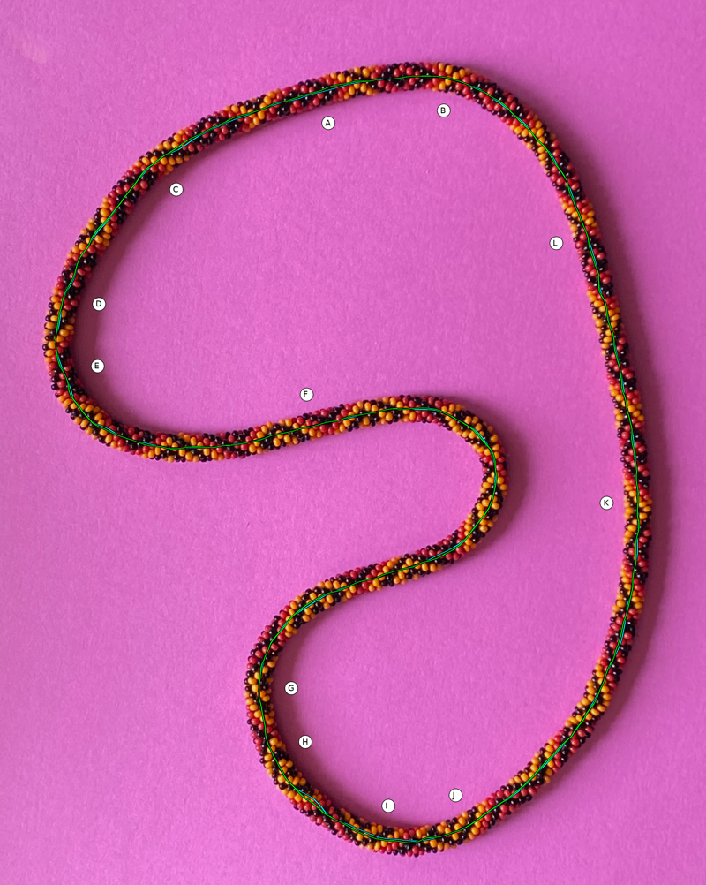
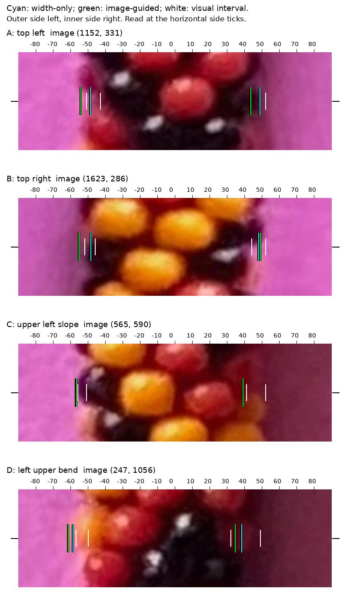
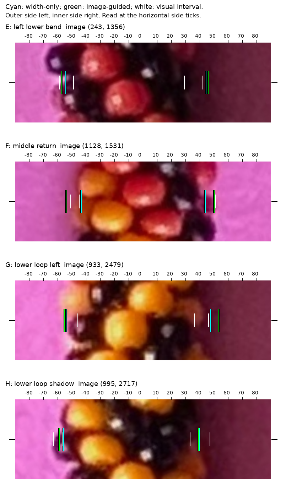
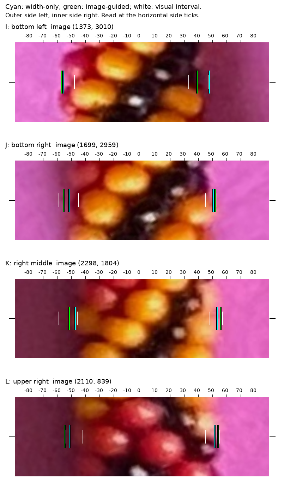
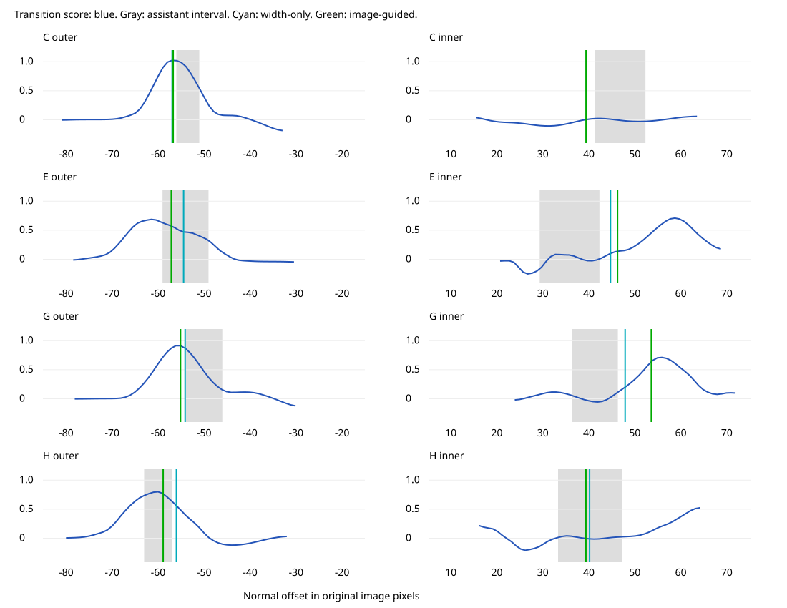

The tested image-guided method is worse on the frozen assistant review intervals. It has not replaced any source geometry. These intervals are subjective visual estimates, not human ground truth.
Cyan: width-only. Green: experimental image-guided. White brackets: visual intervals at the side ticks. Normal offsets are original-photo pixels. The full-image view compares centerlines.
| Method | Edges inside /24 | Within 2px /24 | Mean distance outside | Maximum |
|---|---|---|---|---|
| original | 12 | 18 | 1.71 | 11.27 |
| width_only | 14 | 23 | 0.49 | 2.40 |
| image_guided | 13 | 18 | 1.26 | 7.28 |
| width_sigma_6 | 11 | 19 | 1.04 | 6.13 |
| width_sigma_12 | 11 | 16 | 2.10 | 10.25 |
| no_image | 18 | 22 | 0.35 | 2.71 |
Changing width scales does not rescue the image cue. The no-image ablation is a different soft-geometry fit; its mixed scores are not a reason to adopt it from these twelve observations.




The outward color transition is not always the bead silhouette: blur, local bead scallops and colored shadow can create displaced peaks. G is the largest reviewed regression; H improves. C/E were preselected residual concerns. The graphs show the evidence actually used, not a true-edge probability.
